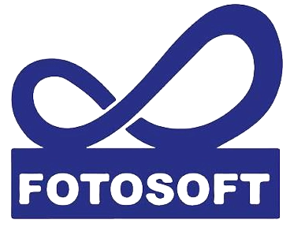

∞ 無限大
暗喻藝術有無限的可能。專業攝影師是一門在藝術與商業世界有無限大可能性的事業；黑色方塊上的無限大符號，也暗喻專業攝影唯有站在紮實的理論基礎上，它的藝術性才有無限發展的空間。
■ 四方形黑色實體
暗喻攝影基礎理論對專業攝影師的重要性。視丘不僅以堅實紮實的攝影與視覺理論訓練著稱，更以有效幫助學生建立個人的理論系統聞名。
Fs FOTO ＋ SOFT
FOTO 意指攝影，SOFT 意指軟體。視丘是攝影軟體資訊的寶庫，更是攝影相關知識的活泉。到視丘，您不僅可以學到「該如何 KNOW-HOW」，更能徹底了解「為什麼要這樣 KNOW-WHY」。
視丘認為專業攝影是各種行業中非常需要左腦右腦平衡的行業。照片上精密的光學品質需要嚴謹的左腦型邏輯訓練；影像中令人動容、回味無窮的精神內涵，則需要右腦型的感性訓練。對已經超越技術層面、想要進入藝術殿堂的攝影家而言，右腦的訓練比左腦更重要。
視丘是台灣最早開設攝影右腦型課程的教育機構，並以視覺心理學、影像美學、世界攝影史、台灣攝影史研究等課程著稱。